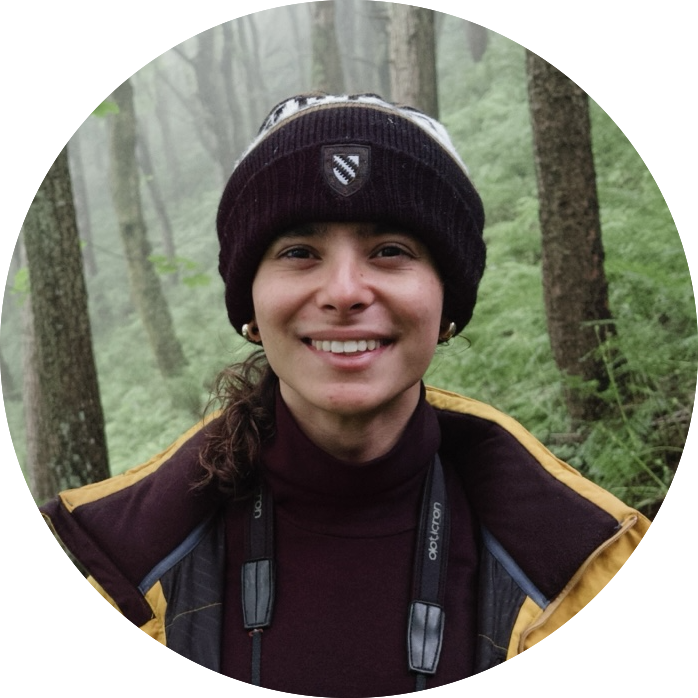
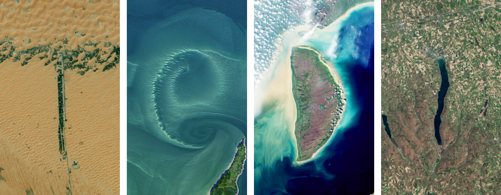

About


This is my name - Tedi - spelled using satellite imagery of Earth using NASA Your Name in Landsat
I'm a PhD student at the University of Oxford, where I work on computer vision and deep learning applications in marine ecology and conservation as part of the Intelligent Earth UKRI CDT in AI for the Environment. Under the supervision of Professor Andrew Zisserman (Visual Geometry Group) and Dr Cait Newport (Animal Perception and Cognition Group), I'm currently focused on deep learning methods for instance segmentation and individual re-identification of coral reef fish in complex underwater settings. I am also working with Professor Tim Guilford (OxNav) and Dr Xiaowen Dong (Machine Learning Research Group) on applying network science and graph machine learning to the study of seabird oceanic movement networks' resilience to climate change and anthropogenic stressors.
Get in touch!
✉️ teodor.yankov@new.ox.ac.uk
Department of Biology and Department of Engineering,
University of Oxford
CV (PDF) · Google Scholar · GitHub · LinkedIn
News
Apr 2026 — Paper accepted at the OxWoCS 2026 for oral presentation!
Feb 2026 — Paper accepted at the INFORMS TSL 2026! See you at MIT!